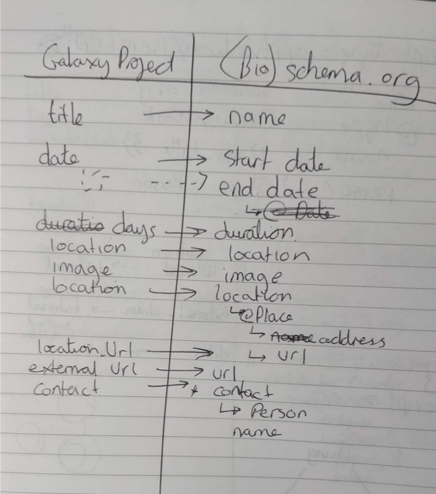

Training platform activities with Bioschemas
Course, CourseInstance and Tr-Material Bioschemas
Victoria Dominguez Del Angel @vic_bioinfo
Bioschemas
- Bioschemas is a community project which;
- Improving discoverability for Life Sciences resources
- Under schema.org
Schema.org: Semantic markup for web pages
Schema.org: Semantic markup for web pages
Aims of Bioschemas
- Creates schema.org specifications for Life science resources : Proteins, Samples, Tools, Training, Person, etc
- Create an enhanced interoperability layer to apply over schema.org
- Cardinality, Minimum information, controlled vocabularies: this constrains the content and format of the loose schema.org to allow automatic extraction
- Creates tools to make bioschemas easier to create, validate, and extract
Structured data → descriptors
Why caring about Training and event Training in life science scientists?
- Explosion of data analyze
- Thousand of possible tools and pipelines for specific analyses
- Find accurate learning path to improve skills and curriculum
Find training through Search Engines is not always easy
- Small labs, departments and organizations do not typically have as much traffic as larger institutions so are ranked lower in search results
- Harder to find advanced or niche topics. Training about common topics and introductory courses are more visible as they’re more popular
- Ending: Search engines are not optimal for finding training
Bioschemas on Goblet AGM 2017 and BH18
- Having schema.org markup in training materials allows training registries to find your materials
- Event vocabulary: schema.org/Event; Event schema has many attributes, which not be important for training materials or courses
- Need to decide if event or course is better, as above groups use Event schema
- Bioschemas.org/TrainingEvent based on schema.org/Event (Topic: EDAM ontology)
- Bioschemas.org/TrainingMaterial based on schema.org/CreativeWork
Methodology for adopting a new profile
- Find and characterize Use cases
- TeSS and other training websites
- Perform a Cross Walk
- Compared the metadata presented by 15 training providers
- Discussed and determined cardinality, minimum, controlled vocabs
- Keep discussion alive with Tasks and issues
- Forum for ongoing discussion via Github Issues
- Make Examples
- Show code examples to give adopters a sense of how to join
Bioschemas Cross Walk (Training Materials)
Adding Bioschemas to a website
- Map existing metadata to fields described by Bioschemas vocabulary
- Create a schema.org Expose those variables 
Work in TeSS and Goblet
- We has displayed on an enhancement to schema.org/Event. Making Bioschemas for
- schema.org/Course
- schema.org/CourseInstance
- schema.org/Person
TeSS Mark Up
What are you waiting for?